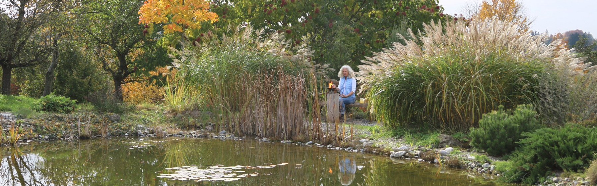
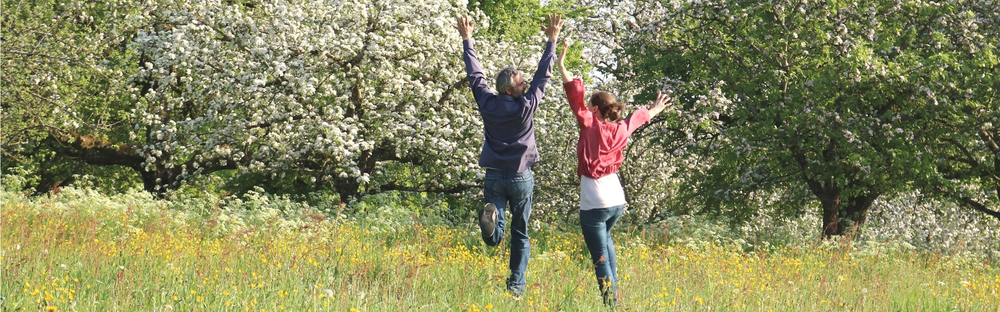
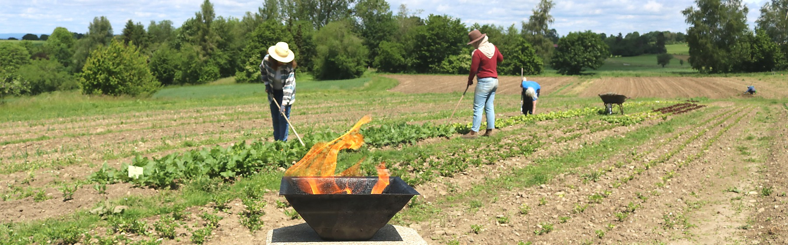
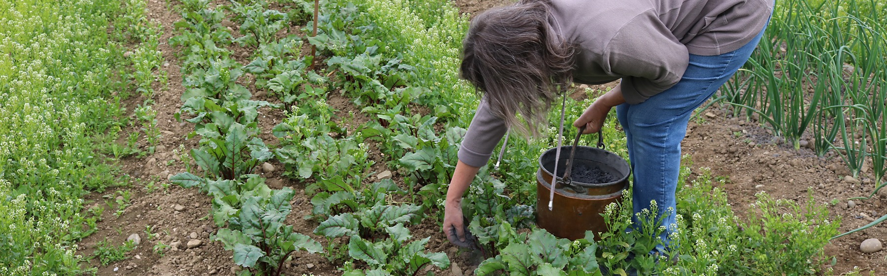

Gesunde Bienen
Bienenwelt
Agnihotra und gesunde Bienen
Agnihotra und die anfallende Asche kräftigen und harmonisieren die Bienen, wodurch sie allgemein gesünder und ruhiger sind – auch bei Varroamilben.
Ökologie, Gesundheit, Landwirtschaft und Spiritualität – das Wissen um die Kraft des Heiligen Feuers.
Agnihotra reinigt die Atmosphäre. Studien zeigen eine messbare Reduktion von Schadstoffen im Umkreis der Feuerzeremonie. Pflanzen und Böden profitieren von den wertvollen Substanzen der Asche.


Viele Praktizierende berichten von positiven Erfahrungen im Bereich Wohlbefinden. Erste Untersuchungen deuten auf antibakterielle Eigenschaften der Asche hin.
Pflanzen, die im Umfeld von Agnihotra wachsen, zeigen bemerkenswerte Unterschiede in Qualität und Ertrag. Homa-Anbau ist eine Quelle für gesunde, energiereiche Lebensmittel.

Agnihotra und die anfallende Asche kräftigen und harmonisieren die Bienen, wodurch sie allgemein gesünder und ruhiger sind – auch bei Varroamilben.
Internationale Forscher haben die Wirkung von Agnihotra und der anfallenden Asche untersucht. Ergebnisse zeigen messbare Veränderungen in Bodenproben, Luft und biologischem Gewebe.

Die Wirkung von Agnihotra lässt sich weit über die tägliche Zeremonie hinaus nutzen – sowohl das Feuer selbst als auch die anfallende Asche bieten vielfältige Möglichkeiten für Mensch, Tier und Pflanze.
Agnihotra schafft einen Raum der Stille. Viele Praktizierende berichten von tiefer innerer Ruhe, gesteigerter Konzentration und einem wachsenden Gefühl der Verbundenheit.